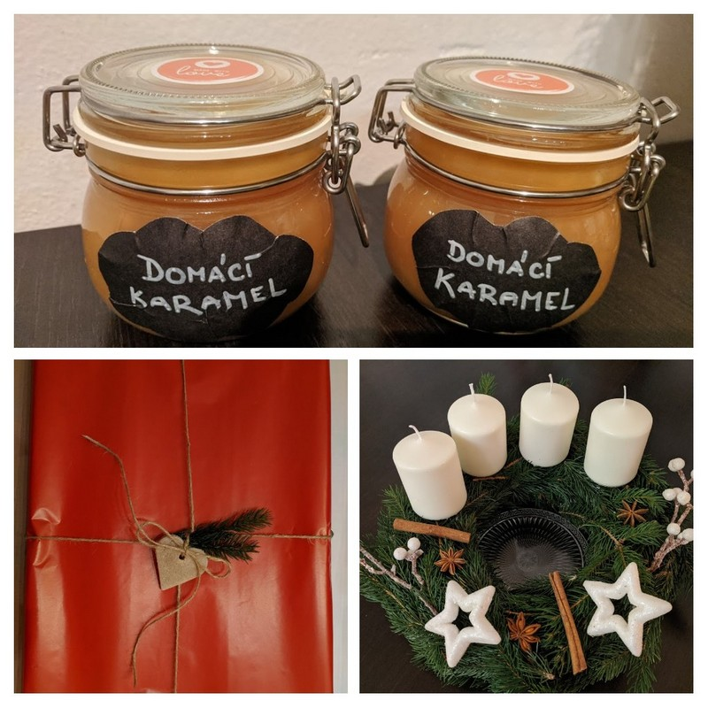
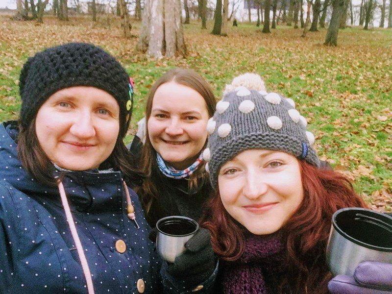
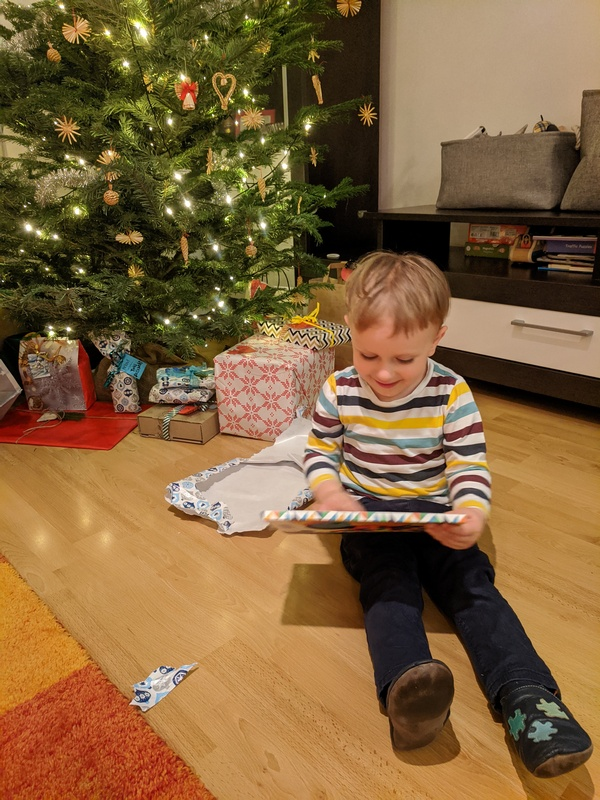
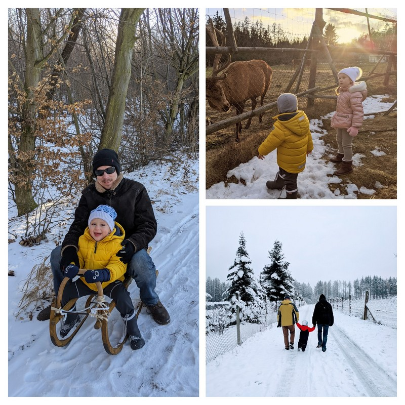

Přijde mi, že ta letošní zima byla vlastně docela krátká a ani mi nevadila tolik jako obvykle. Nevím, jestli je to tím, jak jsme se opět snažili co nejvíc času trávit venku (a má zásoba oblečení do mrazu se letos rozrostla o pár nových hřejivých kousků) nebo tou štědrou sněhovou nadílkou, která nám možná měla vynahradit tu studenou sprchu, která přišla po Vánocích s dalšími uzávěrami… Každopádně tu jdu zakonzervovat pár milých vzpomínek na všechno to hezké, co nás během této zimy potkalo.
Před Vánocemi jsem chytla nějakou tvořivou vlnu. Kromě toho, že jsme hodně doma vyráběli s Olim, jsem se letos vrhla i na dlouho plánovaný projekt adventní věnec. A ač nebyl zrovna dokonalý, přesto ho zbožňuju a měla jsem z něj ohromnou radost.

Ještě před rokem by nás asi ani nenapadlo, že se tyto Vánoce budeme scházet v Podzámce, s rouškama v kapse a svařákama v termosce. Ale naše tradiční setkání na Štěpána už je tak vžitou tradicí, že nás ani covid nezastavil. Díky, holky moje :-)

To letošní nadšení u vánočního stromečku bych přála zažít každému. Doteď jsem nechápala, co je pravdy na tom, že s dětma člověk znovu objevuje dávno zapomenuté kouzlo Vánoc. Ale letos, kdy je Oli celé opravdu naplno vnímal a prožíval, mě to vážně dostalo. A všichni jsme si to ohromně užili spolu s ním.

Tolik sněhu napadlo, že jsme vytáhli dokonce i staré saně ještě po nás s bráchou! Za sněhem jsme nemuseli ani daleko - občas stačilo i vylézt před barák, na což tady v Brně nejsme moc zvyklí :D. Jindy stačilo popojet pár kiláčků za Brno a všude bílá nádhera.

Snad jste si tu letošní zimu i přes všechny ty komplikace taky užili. A teď už vítám jaro s otevřenou náručí :-)